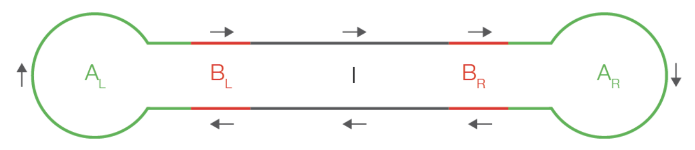
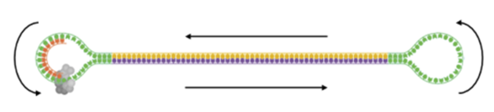

Chapter 4 PacBio

In this section we will quality check PacBio sequencing raw data (BAM files), perform a filter to retain only the longest reads and output the data in fastq format.
4.1 File formats

Sequence data from PacBio are output as subreads in unaligned BAM format. (Further explanation of the BAM format is in section 4.1.3).
The figure below shows a schematic of a circular DNA molecule of a PacBio library with the colours representing:
- Black, I = Insert DNA, i.e. the double-stranded DNA of your sample
- Red, B = Barcodes, optional single (Left or Right) or double (Left & Right) for multiplexing samples
- Green, A = Adapter, SMRTbell adapters with a double-stranded stem and single-stranded hairpin loop.

Sequencing follows the direction of the arrows and continues around until either the end of the sequencing run or if the DNA polymerase fails.
A ZMW read consists of the data collected from a single ZMW, with the HQ (high quality) region recorded when just a single molecule of DNA is present in the ZMW.

This schematic shows the structure of a ZMW read in linear format. Insert DNA subreads are interspersed with the barcode and adapter sequence of the SMRTbell library. For more information see: https://pacbiofileformats.readthedocs.io/en/10.0/Primer.html
subreads.bam file
This contains the sequence for each read (or pass) of the insert DNA (grey).
scraps.bam file
This contains the adapter (green) and barcode (red) sequences, as well as any low quality (black) regions.
These BAM files will usually have an accompanying PacBio BAM index file (subreads.bam.pbi and scraps.bam.pbi).
PacBio data can be generated in two ways depending on the goal of the experiment.
Continuous Long Reads (CLR) the aim is to produce sequence reads as long as possible, such as for genome assembly, sequencing through long repeat regions or finding other large structural variants. CLR runs usually generate one subread (i.e. there would be just one or one and a bit of the grey insert regions shown above) and sequences have an error rate of ~ 10-15%.
Circular Consensus Sequences (CCS) the aim is to sequence shorter molecules (up to 10-15kb max), such as amplicons, and to generate accurate consensus sequences. CCS runs generate higher-accuracy sequences from a consensus of many subreads (i.e. there would be several of the grey insert regions shown above in every ZMW read).
For this tutorial we will carry out quality checking and control on both CLR and CCS BAM files.
 SequelTools
SequelTools
https://github.com/ISUgenomics/SequelTools
We will use the SequelTools program to both assess and filter our PacBio CLR and CCS data.
smrttools
https://www.pacb.com/wp-content/uploads/SMRT_Tools_Reference_Guide_v90.pdf
We will also use smrttools from PacBio to generate any missing index files and CCS reads from subreads BAM files, plus convert BAM to fasta/q format.
RabbitQC
https://github.com/ZekunYin/RabbitQC
Lastly, we will also use RabbitQC to assess the CCS assembled reads in fastq format.
4.2 Continuous Long Reads

Before carrying out any specific commands we will first move into the relevant directory.
cd ~/QC_workshop/PB_QC/data/CLRUse ls to list the contents of this directory. You will see that there are BAM subreads and scraps files for three samples, plus their BAM index files. These data were generated from high molecular weight DNA for de novo genome assembly.
We will use the SequelTools program to both assess and filter our PacBio CLR data. First we need to make a file of filenames (fofn) for the subreads files. You can do this with the following commands:
find $(pwd) -name "*subreads.bam" | sort > CLR_subreads.txtThis command line will find all of the files in our current working directory whose names end in 'subreads.bam', sorts them alphanumerically and prints these names into a new text file.
4.2.1 Quality check

The SequelTools program has three different tools, specified with the -t argument, which are:
Qfor quality controlSfor subsampling the dataFfor filtering the data
We will first use Q to assess our data. Other options used are:
-uto specify the file containing the list of subread .bam files-oto specify the name of an output folder for the plots-pto specify which plots to produce:bfor a few basic plots,iincludes a few more detailed plots andagenerates all available plots.
SequelTools.sh -t Q -p a -u CLR_subreads.txt -o CLR_QCWhen this has finished running the CLR_QC folder will contain a 'summaryTable.txt' file with values on the number and lengths of sequence reads for all three samples, plus a series of plots saved as pdf files. We can use firefox to view the pdf plots.
firefox CLR_QC/totalBasesBarplot.pdf &This shows the total amount of sequence data for each of the three samples, both for all of the subreads present and 'longestSubs' (the longest subread within each CLR). We can see that Sample2 has the largest amount of data, and for all three samples most of the data is contained within the longest subreads. This is expected with CLR data - long fragments of DNA are extracted for sequenicng and we often achieve just a single pass of this insert during the PacBio sequenicng run.
There are also plots for the N50 and L50 of each sample:
firefox CLR_QC/n50s.pdf CLR_QC/l50s.pdf &- N50 = the median sequence length (in bp) of the data; 50% of the sequence data generated is in subreads equal to or greater than this length.
- L50 = the minimum number of subreads whose length makes up the N50 value.
We can see that the N50 is larger for Sample3 compared to Sample1 and Sample2, suggesting the subreads are longer for Sample3. Cnversely, the L50 is higher for Sample2, suggesting the subreads are shorter for this sample as more subreads are required to make up the N50 value.
We can see information on the subread lengths in more detail as boxplots and histograms in the following plots:
firefox CLR_QC/subreadSizesBoxplots.pdf CLR_QC/*Hists.pdf &The boxplots show that Sample3 does indeed have the longest subread lengths, and highest N50 as indicated by the blue diamond. Sample2 has a larger range of subread lengths than Sample1, but has a slightly lower median length and N50 value.
The histograms show the distribution of subread lengths in more detail. Sample3 shows a big spike of very short subreads - why do you think this is? (We'll come back to this after the filtering step!)
4.2.2 Filtering

Our quality check of the PacBio data doesn't include any assessment of sequence quality. Unaligned PacBio data doesn't have a quality score in the same way as the Illumina data we looked at on Tuesday. Quality scores for PacBio are generated when the reads are aligned - either to a reference sequence or subreads aligned to each other to generate CCS reads. However, it is often a good idea to use just the longest PacBio reads for a de novo assembly.
To filter the data by minimum CLR length we will use SequelTools option -t F.
Other options used are:
-uto specify the file containing the list of subread .bam files-cto specify the file containing the list of scraps .bam files-Cto specify to filter by minimum CLR length-Zto specify the minimum length to keep a CLR-fto specify the format o the output files:s=sam,b=bam,2=both-oto specify the name of an output folder for the filtered data files
First we need to make a fofn for the scraps.bam files, as these are needed when using the filtering tool:
find $(pwd) -name "*scraps.bam" | sort > CLR_scraps.txtThen we can run the filtering command. Here we will keep only CLRs of at least 10,000 bp:
SequelTools.sh -t F -u CLR_subreads.txt -c CLR_scraps.txt \
-C -Z 10000 -f b -o filteredWhen this has finished running the 'filtered' folder will contain filtered BAM files for all three samples. Move into this folder using cd:
cd filteredFrom here let's run the quality control tool on the filtered files and compare the plots to those from the raw files. First we need a new fofn for the filtered subread files:
find $(pwd) -name "*subreads.bam" | sort > filt_subreads.txtThen run the quality control tool again:
SequelTools.sh -t Q -p a -u filt_subreads.txt -o filt_QCWhen this has finished running the 'filt_QC' folder will contain a text file of summary values and a series of plots saved as pdf files. We can view these as before, for example:
firefox filt_QC/subreadSizesBoxplots.pdf &And compare this to the boxplots from the unfiltered data:
firefox ~/QC_workshop/PB_QC/data/CLR/CLR_QC/subreadSizesBoxplots.pdf &The difference looks quite subtle on the plots as the size range of reads is large, but the subread N50 value (indicated by the blue diamond) has increased by ~2,000 bp in the filtered data for Sample2 and Sample3.
There are also still subreads present in the data that are < 10,000 bp. This is because we have filtered out CLRs that are < 10,000 bp, but a CLR > 10,000bp can still be made up of subreads smaller than this.
This is definitely the case for Sample1 and Sample2, where the DNA fragment length of the library was shorter than the CLR lengths, hence there are subreads < 10,000 bp within longer CLRs.
Sample3 shows a more obvious difference before and after filtering:
firefox ~/QC_workshop/PB_QC/data/CLR/CLR_QC/Sample3.readLenHists.pdf \
filt_QC/Sample3_flt.readLenHists.pdf &For this sample the DNA fragment length of the library was much greater than 10,000 bp, and so the majority of CLRs consist of just one pass of this long insert. The large number of short subreads remaining in the filtered file (blue bars) represent subreads only partially sequenced on the 'return journey' of the circular library DNA molecule. These are not present when we look only at the longest subread present in each CLR (green bars).
SequelTools doesn't have an option for filtering subreads by length. To do this we can convert the filtered BAM file to a fastq or fasta file and use another downstream tool. The fastq file will not contain any useful information on sequence quality (every base is assigned a quality character of '!' which is equal to zero), but this file format is useful if only fastq format is accepted as input for a downstream tool.
To do this use the commands pbindex and bam2fastq from the smrttools package:
pbindex Sample1_flt.subreads.bamNote that you may see a long warning message ending with "No such file or directory". However, if you run ls you should see that the output file has been generated.
This command generates a .pbi index file that is needed before we can convert the BAM file to fastq format. The bam2fastq command requires an output file prefix name, specified by -o, and the name of the BAM file we want to convert:
bam2fastq -o Sample1_filtered Sample1_flt.subreads.bamYou should now have a compressed fastq file for the CLR-filtered subreads from Sample1.
4.3 Circular Consensus Sequences

We will now look at some long amplicon sequencing data. These data were generated from ~4 kb PCR amplicons of a mammalian gene region.
Before carrying out any specific commands we will first move into the relevant directory.
cd ~/QC_workshop/PB_QC/data/CCSThis folder contains one file of subreads from the ampicons sequenicng run, named 'Sample4.subreads.bam'. Even though we just have one file we want to QC, SequelTools still requires a fofn to run:
find $(pwd) -name "*subreads.bam" > subreads.txtSequelTools.sh -t Q -p a -u subreads.txt -o S4QCWhen these commands have run you will have a 'S4QC' folder containing the 'summaryTable.txt' file the series of plots saved as pdf files. Let's have a look at the subread length histogram:
firefox S4QC/Sample4.readLenHists.pdf &The majority of the longest subreads (green bars) are ~ 4kb (the length of our amplicon), but there are also lots of shorter reads. To filter and further process these data we will use the ccs tool from smrttools package.
Options to specify for this tool are:
--minLengthto specify the minimum subread length to use to generate a ccs read--minPassesto specify the minimum number of subreads per ZMW read to generate a ccs read-jto specify the number of threads to use
Followed by the input filename (the subreads.bam) and the name you want to call the output.
The full command to generate CCS reads is:
`ccs --minLength 3500 --minPasses 7 -j 1 Sample4.subreads.bam S4_ccs.bam`However, even though this is a heavily downsized data set this command still takes ~20 minutes to run. To avoid you having to wait we have included the results file already in your directory. If you have typed in the above command to run you can kill it by pressing Ctrl - C.
To see the results summary:
cd ccs_results
less ccs_report.txtQuestions:
- What percentage of the subreads generated a CCS?
- For what reasons did the rest of the subreads fail to generate a CCS?

Lastly, let's perform a quality check on the 'ccs.bam' file to assess the lengths of the ccs reads. SequelTools only works with the raw subread BAM files, so we will use an alternative program - RabbitQC. However, this program needs a fastq file as input so we will first generate that using the bam2fastq tool from smrttools.
The bam2fastq command requires an output file prefix name, specified by -o, and the name of the BAM file we want to convert. We'll also include the option -u to give an uncompressed fastq output:
bam2fastq -u -o S4_ccs S4_ccs.bamWe're now ready to run RabbitQC. The options to use are:
-ito specify the input fastq file name-Dto specify these are long-read data (i.e. not Illumina)-wto specify the number of threads-hto specify a name for the html results file
Run the following command and then view the output using firefox:
rabbit_qc -i S4_ccs.fastq -D -w 1 -h S4_ccs_qc.htmlfirefox S4_ccs_qc.html &The "Reads Length Distribution" shows all but three ccs reads to be > 4,000bp. The majority are ~ 4.4kb - in fact the amplicon is a little longer than 4kb plus the reads contain an index sequence added during PCR to allow multiplexing of multiple samples, but this tight distribution of sizes is a good indication that the amplifcation and sequencing has worked well.
The other plots show the % nucleotide frequencies and mean quality scores for the beginning and end of the reads. These aren't especially useful as such a short region is shown, but we can see the quality of the ccs reads is very high, and the main advantage of RabbitQC is that it is a very fast way to assess the processed read lengths.